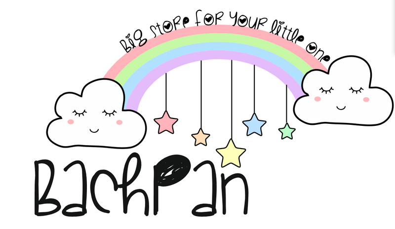

Hello, my Name is
Neha
Sharma
As a graphic designer, I am a highly creative and skilled professional with a passion for visual storytelling. With extensive experience in creating visually appealing and effective designs for a diverse range of clients, I bring a keen eye for detail, strong communication skills, and a deep understanding of design principles to every project I undertake.
logos
My logo portfolio showcases a diverse collection of logos created for various clients, ranging from established businesses to startups. Each design reflects a thoughtful approach to visual storytelling, incorporating elements of color theory, typography, and symbolism to create impactful and memorable logos that represent the unique identity of each brand.
Project 1
Our logo for children's cloth store, based in Nagpur features a colorful and playful design with a smiling cartoon character surrounded by toys, candies, and balloons. It captures the joy and excitement of childhood, and we can't wait to bring endless fun and smiles to your little ones!"


Project 2
Our logo showcases a clean, modern design with a tooth silhouette embellished with a graceful curve that resembles a smile. The use of soothing blue colors evokes a sense of trust and professionalism, while the sleek typography conveys our commitment to excellence. The logo conveys a sense of confidence, reliability, and approachability, reflecting our dedication to providing high-quality dental care with a gentle touch